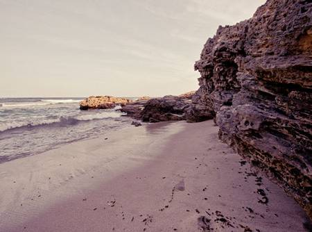
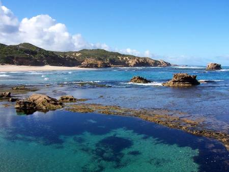

Highlights of local area
Wineries and Restaurants
There are more than 55 wineries to choose from - offering cellar door sales, restaurants, cafes and tours. Along the way discover a foodie’s paradise. Meet the growers, producers, providers and chefs. Experience the fun of picking your own produce or buying dinner ingredients at the farm gate. Dine with views of the sea, lakes and vineyards.

Golf
The Mornington Peninsula is blessed with 19 courses that both challenge and excite. Many golf courses provide the most exhilarating views over Port Phillip Bay, Western Port and Bass Strait. The sand hills and coastal hinterland provide wonderful examples of links, resort and traditional courses. Visitors are always welcome.
Peninsula Hot Springs
Another world awaits. Enjoy the thermal bathing area or book a private indoor or outdoor hot springs bath experience. Activities include reflexology treatments, foot and hand baths, sauna, steam baths, cold plunges and yoga.
The cafe at the bath house provides light meals and gourmet pizzas. Feel revitalised and relaxed at the same time.
Queenscliff-Sorrento Ferry

There's no better way to cross the Bay either with your car or as a foot passenger. It only takes 40 minutes. Spot the playful dolphins whilst enjoying a coffee and light refreshments. The ferries run every day of the year on the hour. Wonderful restaurants at historic Queenscliff on the Bellarine peninsula offer perfect lunchtime adventures.
Walking Tracks
Fabulous walking tracks in any direction for all ages. Beautiful beach walks, amazing cliff top strolls and for the more serious walkers, a 100km walk combines the Bay trial, National Parks and the two Bays walk through the hinterland.
Arts and Culture
The Mornington Peninsula hosts an array of exhibitions and galleries, featuring fine art, sculpture, ceramics, jewelry, hand blown glass and clothing. Small local galleries and craft markets are in abundance across the region.
Shopping Escapades

Lovely, leisurely shopping - for pure pleasure - is listed as the number one activity for holidaymakers. Sorrento and Mornington will not disappoint. Bookshops, giftware, home living and of course the odd handbag or "must have that" top is yours for the exploring.
Water Sports
Endless Fun for all the family. Sailing, fishing, kayaking, paddle boarding, snorkeling, scuba diving and surfing are all on offer, not to mention the cricket match on the beach.